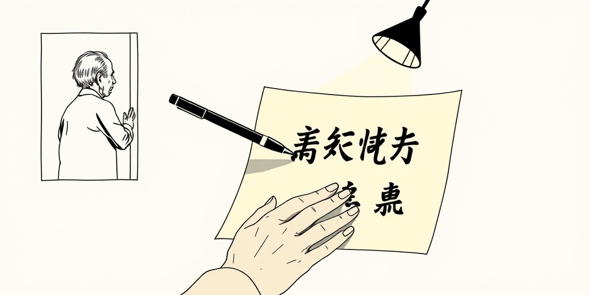
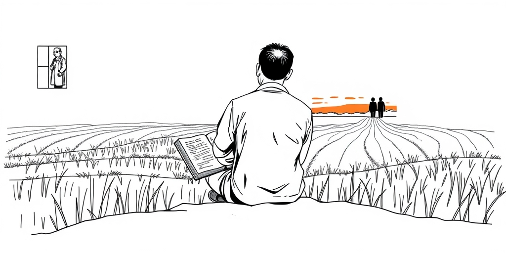
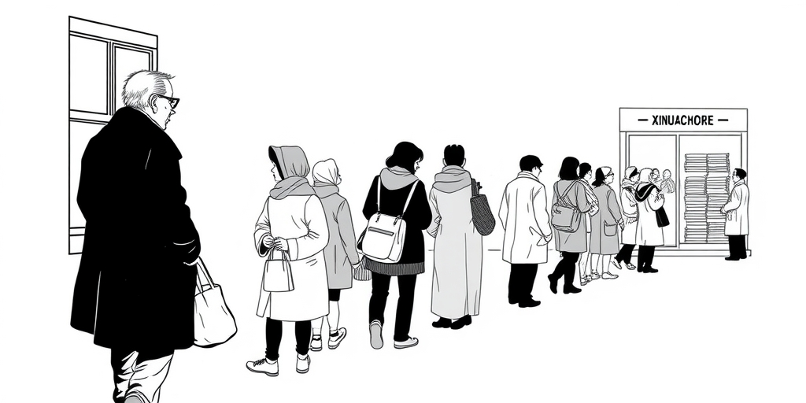
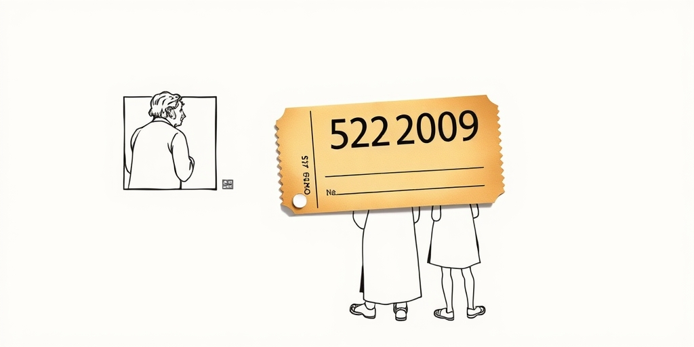

小汪老师的成长洞察 · 属于你的成长专栏
1977年冬天，29岁的吴绪久赶着牛车走了60里路去县城报名。牛车很慢，路是土路，他坐在车上想着：这是第十一年了。从1966年到1977年，他等了整整十一年，才等来了一张准考证。那一年，像他一样涌向考场的，还有570万人。他们不是在参加一场考试，他们是在领回被扣留了十一年的可能性。

1977年8月6日下午，北京，科学和教育工作座谈会已经开了两天。武汉大学副教授查全性站了起来。他当着一屋子人的面，直说推荐制不行。他说，靠单位推荐上大学，招来的学生文化程度参差不齐，有的连初中水平都达不到。他建议立即恢复统一考试。
邓小平听完，拿起笔，在教育部已经拟好的方案草案上划掉了四个字:单位同意。他说的原话是:既然今年还有时间，那就坚决改。这句话很轻，笔尖划过纸面的声音更轻。但就是这一笔，历史拐了个弯。
教育部立即追回已经送出的报告。10月21日，全国各大媒体正式宣布恢复高考。从决定到考试，不到两个月。没有统一教材，没有统一考卷，各省自主命题，连印试卷的纸张都不够——据说最后还是动用了印《毛泽东选集》的纸。但没人等了，也等不起了。

1977年的中国，知识是稀缺品。十年前，知识被贬为无用之物。十年后，几千万人同时意识到:这可能是一生中最后一次机会。21岁的钱颖一，后来成为清华大学经管学院院长，那年他借了一套文革前的中学教科书，带着书下到农村。英语和数学，是在田埂上学的。
19岁的黄大年只有一份考试大纲。他背完了两本各300页的政治和史地书。他的学习方法很原始:快速阅读、强行记忆、反复背诵。没有技巧，没有辅导班，没有模拟题。煤油灯下、田间地头、工厂午休——任何能挤出来的时间都在学习。
上海新华书店门口排起了长队。人们不是在买小说或流行磁带，是在排队抢购一套刚重版的《数理化自学丛书》。这套书在文革中被批判过。现在它回来了，带着一种迟到了十年的承认:知识，是可以改变命运的。

1977年的考场是中国教育史上空前绝后的场景。570万考生涌进考场，他们的年龄横跨13个年级——从1966届到1978届。同一间考场里，可能坐着16岁的应届生，也坐着32岁的老三届，已经结婚生子。他们是师生，是夫妻，是叔侄，却在同一天成了竞争者。
一位吉林的监考老师多年后回忆:没有一个打小抄的。考试结束后，也没有一个人说话，大家都带着那么一种表情离开。那个年代监考制度根本不健全，没人作弊不是因为管得严。是考生们自己觉得，这个机会太珍贵了。珍贵到任何不诚实，都是对它的亵渎。
湖北一个考生拿到数学卷几乎傻眼，只考了14分。靠其他科目硬拉回来，他以219分的总分超了文科录取线。他的准考证号码是5220209。几十年后，这张泛黄的纸片被中国国家博物馆收藏。它不再是一个人的纪念品，而是一个民族的文物。

恢复高考的影响远远超出了教育领域。它做对了一件更大的事:重新确立了努力可以改变命运这个信念。在此之前十年，读书无用是主流意识形态。大学招生靠推荐，推荐的实质是拼关系、拼出身。1977年的那场考试发出一个信号:分数面前人人平等。不管你是谁的儿子，你的卷面成绩说了算。
这个信号比十一届三中全会的改革开放决策早了整整一年。在计划经济体制尚未松动、竞争还不是褒义词的时代，高考的恢复已经把市场经济最核心的原则——凭本事竞争——重新放回了这个社会的血液里。书店门口抢数理化课本的排队队伍，图书馆重新亮起的灯火，城市角落里冒出来的补习班——这些都是信号。知识在被贬低了十年之后，重新变成值得追求的东西。
那场考试录取了27.3万人，录取率4.8%。湖南低到了1.86%。换句话说，570万人中的543万人落榜了。但就是这27万人，以及随后几年扩招培养出的90多万人才，成了中国改革开放的核心人力资本储备。经济学家钱颖一、战略科学家黄大年、画家罗中立、作家刘震云、导演陈凯歌——都是从这扇窄门里走出来的。
77级大学生被后来的研究者称为饿虎扑食般的学习者。他们经历了十年匮乏——知识的匮乏、机会的匮乏、青春的虚掷。当他们坐进教室时，图书馆永远满员，熄灯后走廊路灯下看书是常态，寒暑假不回家在学校自学的人比比皆是。这种对知识的饥渴感，后来的任何一届大学生都难以理解。
那种饥渴感塑造了一代人的精神气质。他们中有一种混合着感恩和使命感的驱动力。感恩是因为知道，自己差一点就完全没有机会了。使命感是因为相信，知识不只是个人的财富，还应该用来回报那个重新给了他们机会的国家。
中国国家博物馆里，那张5220209号准考证安静地躺在玻璃展柜里。泛黄的纸，黑白的照片，照片上一个年轻人在1977年冬天留下的表情。它不是一个答案，它是一个问题:如果那一年高考没有恢复，照片上的这个人，现在会在哪里？而这个问题，570万人中有543万人，用自己的一生作了回答。
值得思考的几个问题
570万人争夺27万个名额，543万人落榜了。他们是失败者吗？如果只看那一场考试的结果，是的。但他们中的很多人，在那个冬天之后再也没有停止过学习。夜校、函授、高等教育自学考试——这些后来陆续打开的通道里，到处是他们的身影。你可以说他们错过了77年的那班车。但他们用自己的方式证明了一件事:当机会重新降临的时候，被耽误了十年的人跑得比谁都快。这件事本身，就是那场考试留下的遗产。今天我们面对的各种机会，比1977年多得多。但那种饿虎扑食般的饥渴感，还在吗？
参考资料
• The Economic Times: Quote of the Day by Queen Elizabeth II: 'With age does come experience, and that can be a virtue if it is…' (Jun 2026)
• Proto Thema: The Nikolaos Andianakos Foundation supports key cultural initiative of the Greek Community with major funding contribution (Jun 2026)
小汪老师的成长洞察 · 属于你的成长专栏